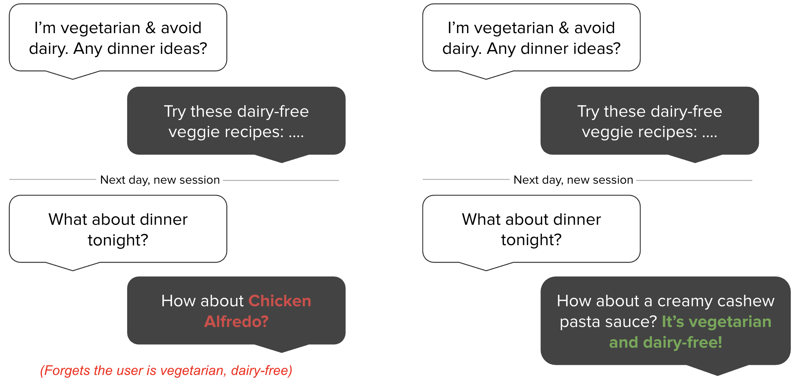
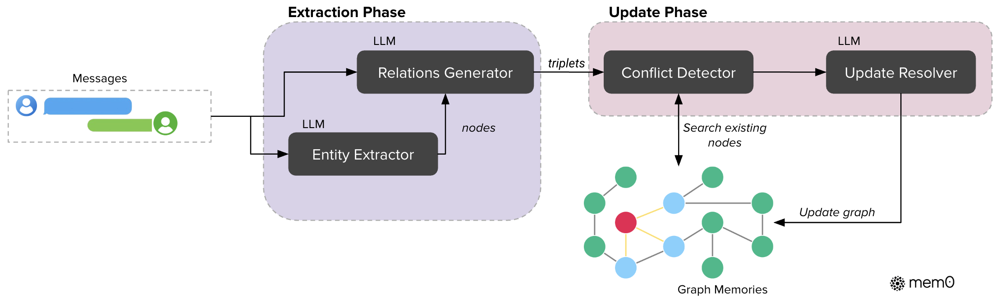

背景与要解决的问题
LLM 缺乏持久记忆机制：信息一旦滑出上下文窗口，模型就等效于「重置」。没有记忆的智能体会忘记用户偏好、重复提问、甚至与已确认的事实自相矛盾——论文开篇举了一个直观例子：用户先说过自己吃素且不吃乳制品，几个会话后问晚餐推荐，无记忆系统可能推荐鸡肉。
作者论证扩大上下文窗口只是推迟而非解决问题，两个理由：
- 随着人机关系跨越数周数月，对话历史总会超过任何上下文上限（即使 GPT-4 128K、o1 200K、Gemini 10M）；
- 真实对话很少保持主题连续——饮食偏好说完后可能隔了几千 token 的编程讨论才回到食物话题，全上下文方案要在大量无关信息中推理，且注意力机制对远距离 token 的效果会衰减。
"A robust AI memory should selectively store important information, consolidate related concepts, and retrieve relevant details when needed — mirroring human cognitive processes." 健壮的 AI 记忆应当有选择地存储重要信息、整合相关概念、并在需要时检索相关细节——模拟人类的认知过程。
核心观点
观点 1：记忆应是「提取出的精炼事实」，而非原始对话文本
与 RAG 把对话切成大块原文再检索不同，Mem0 把对话历史转换为简洁、结构化的自然语言记忆（只保留最显著的事实）。实验证明这能降噪、给 LLM 更精确的线索：最强 RAG 配置的 J 分约 61%，Mem0 达 67%（约 10% 相对提升），Mem0g 超 68%（约 12% 相对提升）。
观点 2：记忆管理 = LLM 驱动的四操作工具调用
每条新提取的候选事实都要与已有记忆比对，由 LLM 自己（而非单独的分类器）通过 tool call 决定执行四种操作之一：ADD（无等价记忆时新增）、UPDATE（用互补信息增强已有记忆）、DELETE（删除被新信息矛盾推翻的记忆）、NOOP（无需改动）。这保证知识库的一致性与时间一致性，也是「记忆作为工具动作」的直接体现。
观点 3：图记忆擅长关系与时序推理，稠密文本记忆擅长简单与多跳检索
Mem0g 把记忆存为有向标注图，显式建模实体间关系。实验揭示两者互补：单跳与多跳问题上稠密自然语言记忆（Mem0）更好——图结构在复杂整合任务中反而引入冗余；而时序推理上 Mem0g 显著领先（J 58.13 vs 55.51），因为关系图善于捕捉事件顺序与时间关系。
观点 4：生产可用 = 质量、延迟、token 成本三者的平衡
"Mem0 attains a 91% lower p95 latency and saves more than 90% token cost, thereby offering a compelling balance between advanced reasoning capabilities and practical deployment constraints." Mem0 实现了低 91% 的 p95 延迟并节省超过 90% 的 token 成本，从而在高级推理能力与实际部署约束之间提供了极具吸引力的平衡。
全上下文方案 J 分虽最高（约 73%），但每次查询都要读完约 26,000 token 的完整对话，p95 总延迟约 17 秒；Mem0 仅约 1.44 秒。且随对话变长，全上下文的开销急剧增长，而记忆方案的性能不随对话长度退化。

方法与架构
Mem0：提取 + 更新两阶段流水线

- 提取阶段（extraction）：以消息对 (mt-1, mt)（用户消息 + 助手回复）为处理单元；上下文由两部分提供——异步刷新（不阻塞主管道）的全对话摘要 S + 最近 m 条消息（实验取 m=10）；LLM 提取函数 φ 据此从新消息对中产出一组候选显著记忆 Ω。
- 更新阶段（update）：对每条候选事实，先用向量嵌入检索 top-s（实验取 s=10）条语义相似的既有记忆，连同候选事实一起交给 LLM，由其通过函数调用（tool call）裁决 ADD / UPDATE / DELETE / NOOP。
- 实现细节：所有 LLM 操作用 GPT-4o-mini；向量库用稠密嵌入做相似检索。
Mem0g：图记忆变体

- 表示：有向标注图 G=(V, E, L)——节点 V 为实体（如 Alice、San_Francisco），边 E 为关系（如 lives_in），标签 L 给节点赋语义类型（Person、City）；关系存为三元组 (vs, r, vd)；每个实体节点含类型分类、语义嵌入向量、创建时间戳。
- 两阶段提取：实体抽取器识别人物/地点/物体/概念/事件/属性等实体及类型 → 关系生成器分析语言模式、上下文线索与领域知识，为实体对判定关系并打标（lives_in、prefers、owns、happened_on 等）。
- 冲突消解：新三元组并入时按嵌入相似度阈值 t 匹配既有节点；冲突检测机制发现潜在矛盾关系后，由 LLM 更新解析器判定是否过时——标记为无效而非物理删除，以支持时序推理。
- 双重检索：① 实体中心法——定位查询中的关键实体节点，沿出入边探索构建相关子图；② 语义三元组法——把整个查询编码为稠密向量，与每个关系三元组的文本编码算细粒度相似度，按阈值和相似度排序返回。两者分别擅长实体焦点问题与宽泛概念查询。
- 实现：图数据库用 Neo4j；抽取与更新模块用 GPT-4o-mini 的函数调用能力。
实验结果与结论
基准：LOCOMO——10 段超长对话，每段约 600 轮、平均约 26,000 token、多会话；每段对话平均配 200 个问题，分四类：单跳（single-hop）、多跳（multi-hop）、时序（temporal）、开放域（open-domain）。指标：F1、BLEU-1、LLM-as-a-Judge（J，每方法独立跑 10 次取均值±标准差）；部署侧另测 token 消耗、搜索延迟与总延迟（p50/p95）。基线六类：既有记忆系统（LoCoMo、ReadAgent、MemoryBank、MemGPT、A-Mem）、开源方案 LangMem、不同分块与 k 值的 RAG、全上下文、OpenAI ChatGPT 记忆功能、商业记忆平台 Zep。
分类别表现（J 分）
| 问题类型 | 最佳方法 | 关键数字（J ↑） |
|---|---|---|
| 单跳 | Mem0 | Mem0 67.13；OpenAI 63.79 次之；LangMem/Zep 相对低约 8%；A-Mem 落后 25+ 分 |
| 多跳 | Mem0 | Mem0 51.15（F1 28.64）；图记忆在此无增益——稠密自然语言记忆足以支撑跨会话信息整合 |
| 开放域 | Zep | Zep 76.60 略胜；Mem0g 75.71 紧随（差 0.89 分），Mem0 72.93 |
| 时序 | Mem0g | Mem0g 58.13（F1 51.55）；Mem0 55.51；OpenAI 不足 15%（其生成的记忆大多缺时间戳） |
效率对比（整体 J 分与延迟，LOCOMO 全集）
| 方法 | 整体 J ↑ | 搜索延迟 p50/p95（秒） | 总延迟 p50/p95（秒） | 记忆规模（token/对话） |
|---|---|---|---|---|
| 最强 RAG（k=2, 256） | 60.97% | 0.255 / 0.699 | 0.802 / 1.907 | — |
| 全上下文（约 26k token） | 72.90% | — | 9.870 / 17.117 | 26k（原始对话） |
| A-Mem | 48.38% | 0.668 / 1.485 | 1.410 / 4.374 | 2520 |
| LangMem | 58.10% | 17.99 / 59.82 | 18.53 / 60.40 | 127 |
| Zep | 65.99% | 0.513 / 0.778 | 1.292 / 2.926 | >600k（图冗余大） |
| OpenAI 记忆 | 52.90% | — | 0.466 / 0.889 | 4437 |
| Mem0 | 66.88% | 0.148 / 0.200 | 0.708 / 1.440 | 约 7k |
| Mem0g | 68.44% | 0.476 / 0.657 | 1.091 / 2.590 | 约 14k |
要点：
- Mem0 的搜索延迟全场最低（p50 0.148s / p95 0.200s），总延迟中位数 0.708s，适合延迟敏感的交互式智能体；
- Mem0g 取得所有方法中最高的 J 分（68.44%）——仅次于计算上不可行的全上下文方案（72.90%），但总 p95 延迟只有其约 1/7（2.59s vs 17.1s）；
- 相对 OpenAI 记忆，Mem0 的 J 分相对提升 26%（66.88 vs 52.90）；
- 记忆占用：Mem0 约 7k token/对话，Mem0g 约 14k，而 Zep 的记忆图超过 600k（在每个节点缓存完整摘要+边上存事实导致大量冗余），是原始对话（26k）的 20 余倍；
- 作者还观察到 Zep 图构建依赖大量异步 LLM 调用与后台处理：写入后立即检索常常失败，数小时后重跑才正常——不适合实时应用。
结论
稠密自然语言记忆与图记忆优势互补：简单查询用前者更高效，需要细腻时序与关系整合的任务离不开后者。结构化的持久记忆机制是长期对话一致性的关键，也是「从健忘的应答器到可靠的长期协作者」这一转变的基础。
影响与课程关联
- 领域地位：Mem0 是生产级智能体记忆服务的代表（mem0.ai），本文给出了记忆系统与 RAG、全上下文、商业竞品的系统性横向评测，其「提取-整合-检索」管道与 ADD/UPDATE/DELETE/NOOP 记忆操作被广泛借鉴。
- 与 CS329Z 第七讲的关联：对应「短期 vs 长期记忆」「结构化记忆范式」主题——Mem0 的记忆库是长期记忆，最近消息窗口与对话摘要是短期上下文；「记忆作为工具动作」体现为更新阶段的 tool-call 裁决；Mem0g 的知识图是「结构化记忆」的典型实现。与本讲必读 MemGPT 对照：MemGPT 关注上下文窗口内外的分页调度（OS 隐喻），Mem0 关注从对话中蒸馏可演进的事实库（数据库隐喻），两者代表了智能体记忆的两条主线。
- 评测方法论：论文对 F1/BLEU 等词面指标的批评（词面重叠高但事实错误仍得高分）与 LLM-as-a-Judge 的采用，呼应课程评测单元（L12/L13）的主题。
关键术语中英对照
| 英文 | 中文 | 说明 |
|---|---|---|
| Persistent memory | 持久记忆 | 跨会话保留信息的能力，本文要解决的核心缺失 |
| Memory extraction / update phase | 记忆提取 / 更新阶段 | Mem0 两阶段流水线的组成部分 |
| Consolidation | （记忆）整合 | 把相关概念合并、去冗余、消矛盾 |
| ADD / UPDATE / DELETE / NOOP | 新增/更新/删除/无操作 | LLM 通过工具调用裁决的四种记忆操作 |
| Tool call / function calling | 工具调用 / 函数调用 | 让 LLM 结构化地执行记忆操作（第二讲主题） |
| Graph memory | 图记忆 | Mem0g：实体为节点、关系为边的有向标注图 |
| Relationship triplet | 关系三元组 | (源实体, 关系, 目标实体)，如 (Alice, lives_in, San_Francisco) |
| Conflict detection / update resolver | 冲突检测 / 更新解析器 | 发现矛盾关系并标记过时（不物理删除，支持时序推理） |
| LOCOMO | LOCOMO 基准 | 长期对话记忆评测集：10 段超长多会话对话 + 四类问题 |
| Single-hop / multi-hop / temporal / open-domain | 单跳 / 多跳 / 时序 / 开放域 | LOCOMO 的四种问题类型 |
| LLM-as-a-Judge (J) | LLM 评审 | 用更强 LLM 评估事实准确性/相关性/完整性（第十三讲主题） |
| p50 / p95 latency | 中位数 / 95 分位延迟 | 部署指标；p95 反映尾部体验 |
| Full-context approach | 全上下文方案 | 把整个对话历史塞进上下文窗口的基线 |